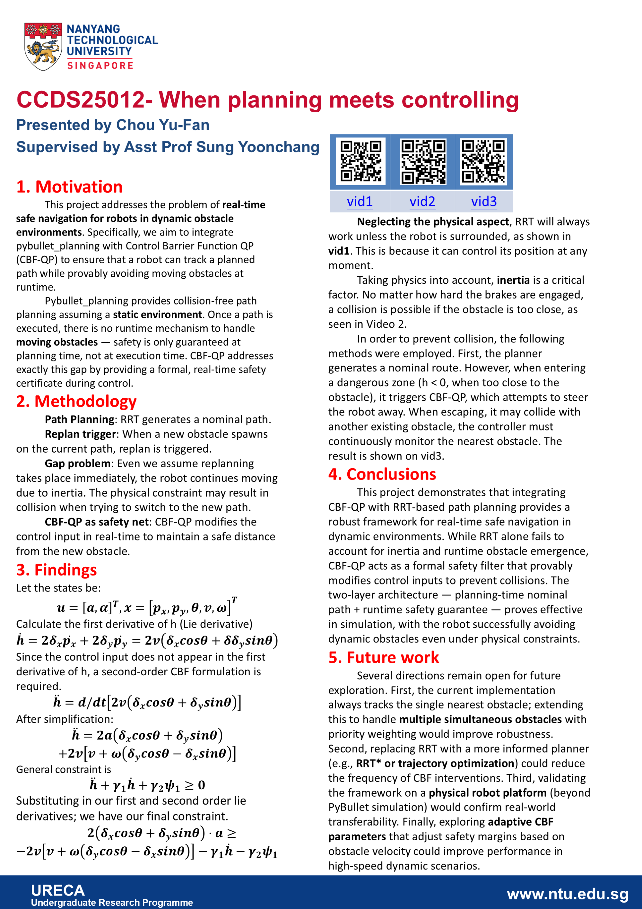

NTU URECA / Robotics
When planning
meets controlling
My undergraduate research on robot navigation around moving obstacles, combining path planning with a controller that responds while the robot is moving.
Project CCDS25012 · Supervised by Asst Prof Sung Yoonchang
01 / Research
Robot navigation with safety constraints
For my URECA project, I worked on combining RRT path planning with a Control Barrier Function quadratic program (CBF-QP) in PyBullet. The problem was straightforward to describe: a path can be clear when it is planned, but a new obstacle can appear while the robot is following it. Replanning helps, but the robot still has momentum and cannot instantly switch to a new path.
I used RRT to generate a nominal route and CBF-QP to adjust the control input during execution. Because the acceleration input does not appear in the first derivative of the safety function, I derived a second-order barrier constraint. This let the controller account for the robot's motion when responding to an obstacle.
The simulations showed why inertia matters and how a safety controller can help the robot avoid newly appearing obstacles. They also exposed a limitation of tracking only the nearest obstacle: moving away from one obstacle can bring the robot closer to another. Handling multiple obstacle constraints together is an important next step, along with testing the approach on a physical robot.
- Tools and methods
- Python, PyBullet, pybullet_planning, RRT, CBF-QP
- Validation
- Simulation in PyBullet
02 / Programme
What is NTU URECA?
URECA stands for Undergraduate Research Experience on Campus. It is Nanyang Technological University's undergraduate research programme, where students work with faculty members and research staff on a research project over an academic year. It gives students experience with research alongside their regular coursework.
03 / Poster
The original poster covers the motivation, controller formulation, simulation findings, and possible next steps.
